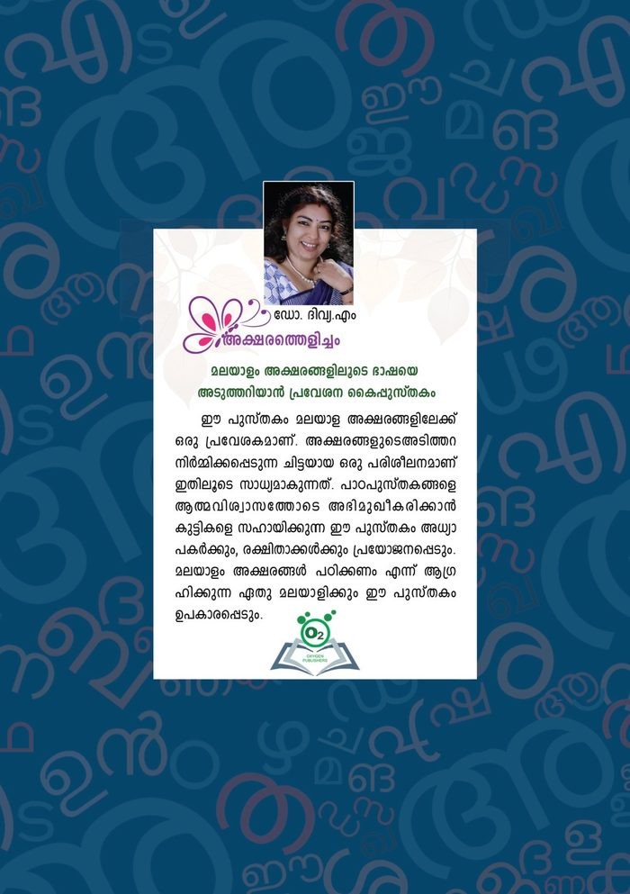
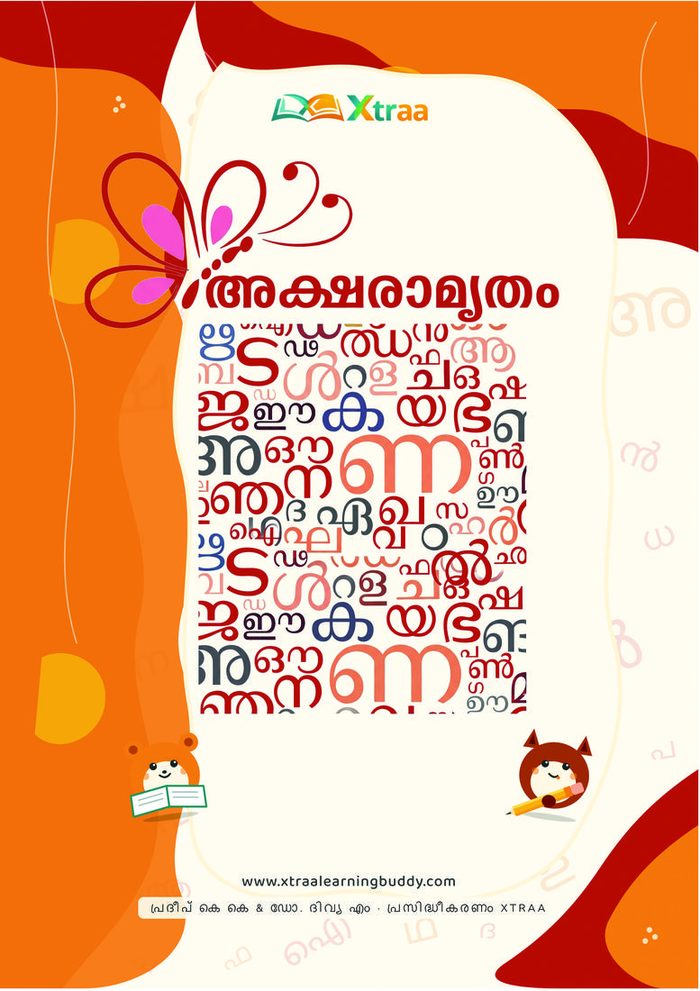
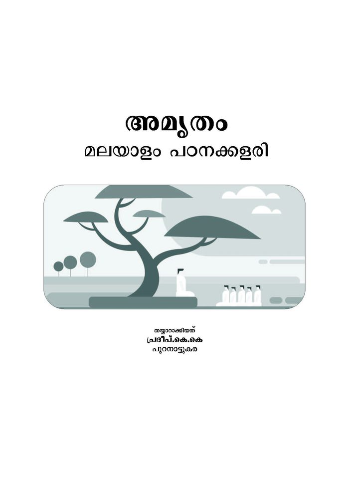

Cover to come
വേനൽ — a dawn in Thrissur
Dr. Divya M
ഡോ. ദിവ്യ എം
Teacher · Author · Poet · Podcaster
A life told in four seasons — the summer of beginnings, the monsoon of words, the growing season of teaching, and the harvest of a Kerala community that reads because of her.
ജീവിതം The teacher who writes
Dr. Divya M is a teacher, writer and poet from Puranattukara, Thrissur. Her doctoral work at Mahatma Gandhi University was a critical study of the prose of N.V. Krishna Warrier — the poet-scholar she has long admired. She is best known across Kerala for a quietly radical idea: reviving the habit of reading by carrying literature onto the small screen, one WhatsApp status at a time.
Alongside the classroom she is an award-winning poet, a literary critic and researcher with books and journal papers to her name, author of Malayalam's first WhatsApp-status novel, and — through her early-reading books — a teacher who puts first letters into the hands of children yet to learn to read.
- Doctorate
- N.V. Krishna Warrier's Prose Literature — A Critical Study · Mahatma Gandhi University (guide: Dr. S.K. Vasanthan)
- Qualifications
- MA, B.Ed · NET, JRF, SRF — Malayalam
- Teaching
- Vivekodayam Boys' Higher Secondary School, Thrissur
- Awards
- People's Poetry Award, Chilankam (2014) · AWCF award (2019) · and other honours for her poems
എഴുത്ത് When the rain writes
The monsoon is Kerala's season of ink — and hers. Novels and poems, written in the language of home.
Books
Cover to come
കരുണ
Cover to come
തക്ഷകൻ
Cover to come
മയിൽപ്പീലികൾ ഉടവാളുകൾ
Cover to come
തേനും വയമ്പും
Selected publications
Peer-reviewed papers and essays — much of it tracing the poet-scholar N.V. Krishna Warrier, the subject of her doctoral research.
- പള്ളിവാളും കാൽച്ചിലമ്പും · Sahityalokam, 2011
- എൻ.വി. കൃഷ്ണവാര്യരുടെ ആട്ടക്കഥകൾ · Sahityalokam, Vol. 44, 2016
- ചരിത്രഗവേഷകനായ എൻ.വി. കൃഷ്ണവാര്യർ · Sahityalokam, 2017
- എൻ.വി.യുടെ അവതാരികകളെക്കുറിച്ച് · Sahityachakravalam, 2019
- മലയാളത്തിലെ ഗീതാഞ്ജലി പരിഭാഷകൾ · Malayalam Research Journal, 2012
- വാനപ്രസ്ഥം — ഒരു പഠനം · Bharatapatrika, 2016
- ലോകസഞ്ചാരം വേറിട്ട വഴികളിലൂടെ · chapter in “Katha Thedunna Sanchari”, a volume on S.K. Pottekkatt
Poems
മാനത്ത് മിന്നുന്ന താരകമേ
മാമഴക്കാറിനെ പേടിയാണോ ?
അമ്പിളിമാമനുണ്ടെങ്കിലേ നീ
വമ്പങ്ങു കാട്ടിച്ചിരിപ്പതുള്ളൂ ?
നക്ഷത്രം · Star
വീടുകളെല്ലാം മനുഷ്യരെപ്പോലെയാണ്.
പുറമേ പരുക്കനെങ്കിലും
അകമേ സ്നേഹം നിറഞ്ഞവ.
പുറമേ സൗന്ദര്യമെങ്കിലും
അകമേ വെളിച്ചം കയറാത്തവ.
ഭവനഭേദനം · Bhavanabhedanam
കൊതിക്കിനാവിൻറെയൂഞ്ഞാലിനൊപ്പം
കുതിച്ചുപൊങ്ങുന്ന കുപ്പായനൂലിനെ
ചതിക്കുഴിയുടെ വക്കോളമെത്തിച്ച്
ചതുപ്പിലെപ്പൊഴോ താഴ്ത്തിക്കളഞ്ഞു നീ...!
ദ്രൗപദി · Draupadi
പോരാടി നേടാൻ
പ്രണയം യുദ്ധമല്ല.
പിൻതിരിഞ്ഞോടിയവർ
പരിഹസിക്കപ്പെടേണ്ടവരുമല്ല.
പോരാട്ടം · Poraattam
പഠനം The growing season
After the rain, everything grows. Resources for children learning to read, students preparing for exams, and the teachers who guide them.

Aksharathelicham അക്ഷരത്തെളിച്ചം
Her own book (published by Oxygen Publishers) — a primer that opens the door to Malayalam letters through structured practice, building the foundation that lets children face their textbooks with confidence. Written for teachers, parents, and anyone who wants to learn to read Malayalam.
About the book →
Aksharamrutham അക്ഷരാമൃതം
A Malayalam early-reading book she co-authored (with Pradeep K.K., published by Xtraa) — phonics, sight words, guided writing and picture stories that carry children from their very first letters to confident, independent reading. Malayalam, with Hindi and English editions.
About the book →
Amrutham അമൃതം
മലയാളം പഠനക്കളരി — a second Malayalam learning book she co-created (with Pradeep K.K.), guiding children from their first letters into reading. Featured in Kerala Kaumudi (2024) as it reached schools across districts.
About the book →Divyadinasandesham ദിവ്യദിനസന്ദേശം
Her daily message — a few minutes of Malayalam on language, learning and life, shared the way she has always reached her readers: voice to voice.
-
ദിവ്യദിനസന്ദേശം · 1 6:54
-
ദിവ്യദിനസന്ദേശം · 2 9:15
കൊയ്ത്ത് What the seasons returned
Reviews from readers, features in the press, and the books themselves — the harvest of a life spent sowing words.
[Reader or critic quote about her work]
[Teacher or parent testimonial]
In the news
- Manorama Online — 380 statuses, one novel: her WhatsApp serialisation of Rajalakshmi's ഒരു വഴിയും കുറെ നിഴലുകളും · 17 May 2019
- Kerala Kaumudi — the early-reading books movement (she co-authored Aksharamrutham, Xtraa) · 17 Oct 2024
- Kerala Kaumudi — Reading Day feature, with her ടീച്ചറോർമ്മ column “Vivekodaya Madhuryam” · 19 Jun 2023
- Mathrubhumi Books — “ദിവ്യ ടീച്ചർക്ക് നോവലൊരു ‘സ്റ്റാറ്റസ്’ ആണ്” · 11 May 2019
- Santham (magazine) — interview · January 2020
Take a book home
Every book is delivered across Kerala. Order directly on WhatsApp — a real person replies.
Order on WhatsApp Browse all books